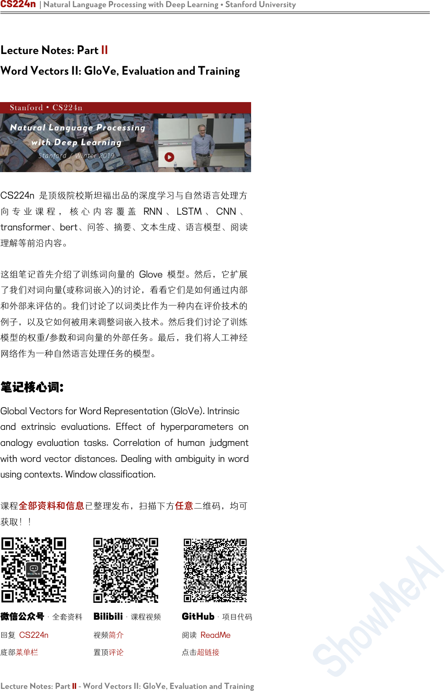
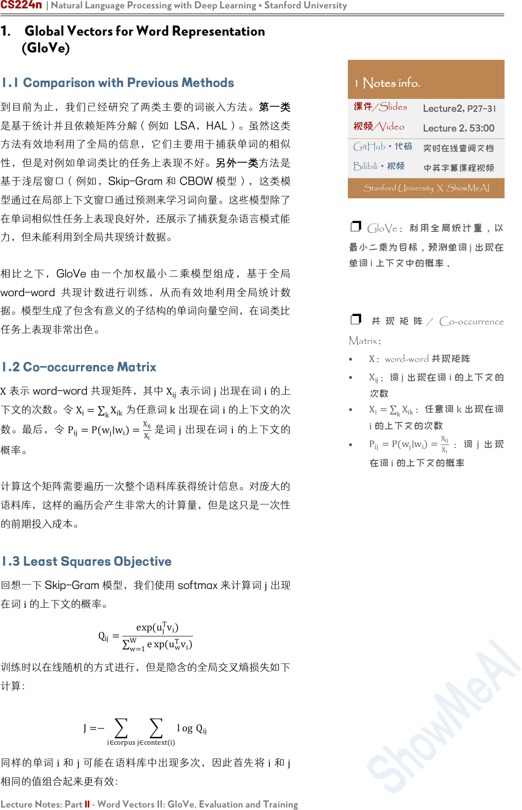
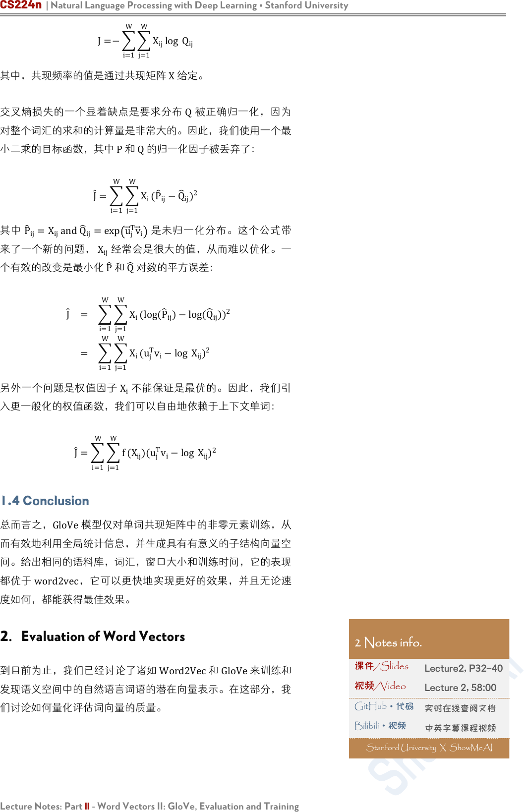
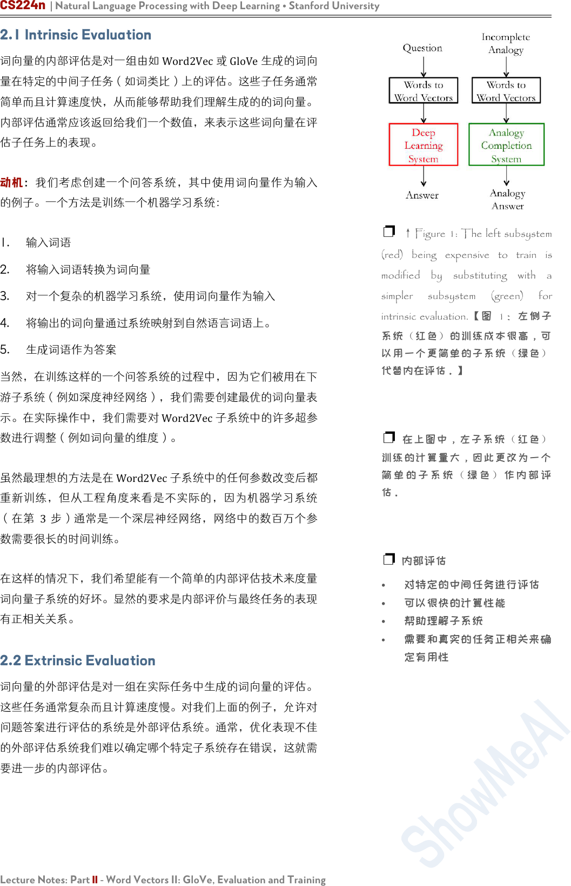
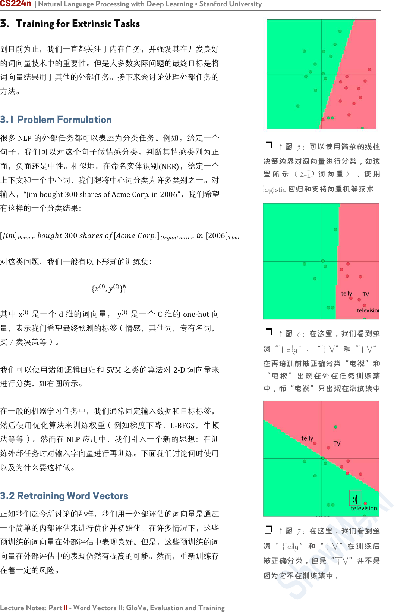
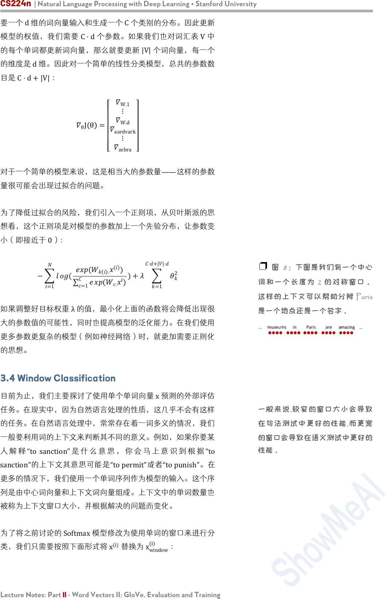
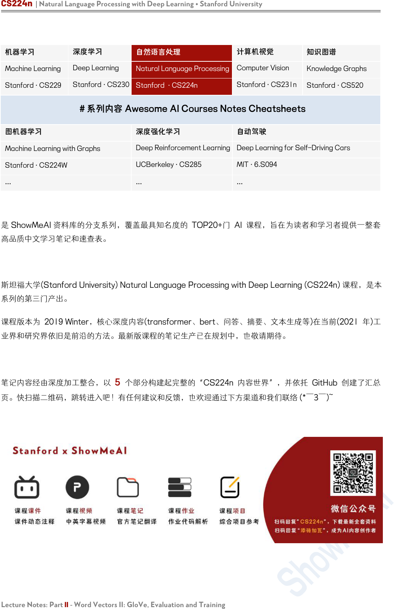

CS224n | Natural Language Processing with Deep Learning • Stanford University
Lecture Notes: Part II - Word Vectors II: GloVe, Evaluation and Training
Lecture Notes: Part II
Word Vectors II: GloVe, Evaluation and Training
CS224n 是顶级院校斯坦福出品的深度学习与自然语言处理方
向 专 业 课 程 ， 核 心 内 容 覆 盖 RNN 、 LSTM 、 CNN 、
transformer、bert、问答、摘要、文本生成、语言模型、阅读
理解等前沿内容。
这组笔记首先介绍了训练词向量的 Glove 模型。然后，它扩展
了我们对词向量(或称词嵌入)的讨论，看看它们是如何通过内部
和外部来评估的。我们讨论了以词类比作为一种内在评价技术的
例子，以及它如何被用来调整词嵌入技术。然后我们讨论了训练
模型的权重/参数和词向量的外部任务。最后，我们将人工神经
网络作为一种自然语言处理任务的模型。
笔记核心词：
Global Vectors for Word Representation (GloVe). Intrinsic
and extrinsic evaluations. Effect of hyperparameters on
analogy evaluation tasks. Correlation of human judgment
with word vector distances. Dealing with ambiguity in word
using contexts. Window classification.
课程
全部资料和信息
已整理发布，扫描下方
任意
二维码，均可
获取！！
微信公众号
·全套资料
回复 CS224n
底部菜单栏
Bilibili
·课程视频
视频简介
置顶评论
GitHub
·项目代码
阅读 ReadMe
点击超链接

CS224n | Natural Language Processing with Deep Learning • Stanford University
Lecture Notes: Part II - Word Vectors II: GloVe, Evaluation and Training
1. Global Vectors for Word Representation
(GloVe)
1.1 Comparison with Previous Methods
到目前为止，我们已经研究了两类主要的词嵌入方法。第一类
是基于统计并且依赖矩阵分解（例如 LSA，HAL）。虽然这类
方法有效地利用了全局的信息，它们主要用于捕获单词的相似
性，但是对例如单词类比的任务上表现不好。另外一类方法是
基于浅层窗口（例如，Skip-Gram 和 CBOW 模型），这类模
型通过在局部上下文窗口通过预测来学习词向量。这些模型除了
在单词相似性任务上表现良好外，还展示了捕获复杂语言模式能
力，但未能利用到全局共现统计数据。
相比之下，GloVe 由一个加权最小二乘模型组成，基于全局
word-word 共现计数进行训练，从而有效地利用全局统计数
据。模型生成了包含有意义的子结构的单词向量空间，在词类比
任务上表现非常出色。
1.2 Co-occurrence Matrix
X
表示 word-word 共现矩阵，其中
X
ij
表示词 j出现在词 i的上
下文的次数。令
X
i
=
k
X
ik
为任意词
k
出现在词
i
的上下文的次
数。最后，令 P
ij
=P(w
j
∣w
i
)=
X
ij
X
i
是词 j出现在词 i的上下文的
概率。
计算这个矩阵需要遍历一次整个语料库获得统计信息。对庞大的
语料库，这样的遍历会产生非常大的计算量，但是这只是一次性
的前期投入成本。
1.3 Least Squares Objective
回想一下 Skip-Gram 模型，我们使用 softmax 来计算词 j出现
在词 i的上下文的概率。
Q
ij
=
exp(u
j
T
v
i
)
w=1
W
e xp(
u
w
T
v
i
)
训练时以在线随机的方式进行，但是隐含的全局交叉熵损失如下
计算：
J=−
i∈corpus
j∈context(i)
l og Q
ij
同样的单词 i和 j可能在语料库中出现多次，因此首先将 i和 j
相同的值组合起来更有效：
1 Notes info.
课件/Slides
Lecture2, P27-31
视频/Video
Lecture 2, 53:00
GitHub
·代码
实时在线查阅文档
Bilibili·视频
中英字幕课程视频
Stanford University X ShowMeAI
❐ GloVe：利用全局统计量，以
最小二乘为目标，预测单词
j
出现在
单词
i
上下文中的概率。
❐ 共 现 矩 阵 / Co-occurrence
Matrix：
•
X
：word-word 共现矩阵
•
X
ij
：词
j
出现在词
i
的上下文的
次数
•
X
i
=
k
X
ik
：任意词
k
出现在词
i
的上下文的次数
•
P
ij
=P(w
j
∣w
i
)=
X
ij
X
i
：词
j
出现
在词
i
的上下文的概率

CS224n | Natural Language Processing with Deep Learning • Stanford University
Lecture Notes: Part II - Word Vectors II: GloVe, Evaluation and Training
J=−
i=1
W
j=1
W
X
ij
log Q
ij
其中，共现频率的值是通过共现矩阵 X给定。
交叉熵损失的一个显着缺点是要求分布
Q
被正确归一化，因为
对整个词汇的求和的计算量是非常大的。因此，我们使用一个最
小二乘的目标函数，其中 P和 Q的归一化因子被丢弃了：
J
=
i=1
W
j=1
W
X
i
(
P
ij
−Q
ij
)
2
其中
P
ij
=X
ij
andQ
ij
=exp u
j
T
v
i
是未归一化分布。这个公式带
来了一个新的问题，
X
ij
经常会是很大的值，从而难以优化。一
个有效的改变是最小化
P
和
Q
对数的平方误差：
J
=
i=1
W
j=1
W
X
i
(log(
P
ij
)−log(
Q
ij
)
)
2
=
i=1
W
j=1
W
X
i
(u
j
T
v
i
−log
X
ij
)
2
另外一个问题是权值因子 X
i
不能保证是最优的。因此，我们引
入更一般化的权值函数，我们可以自由地依赖于上下文单词：
J
=
i=1
W
j=1
W
f (X
ij
)(u
j
T
v
i
−log X
ij
)
2
1.4 Conclusion
总而言之，GloVe模型仅对单词共现矩阵中的非零元素训练，从
而有效地利用全局统计信息，并生成具有有意义的子结构向量空
间。给出相同的语料库，词汇，窗口大小和训练时间，它的表现
都优于 word2vec，它可以更快地实现更好的效果，并且无论速
度如何，都能获得最佳效果。
2. Evaluation of Word Vectors
到目前为止，我们已经讨论了诸如 Word2Vec和 GloVe来训练和
发现语义空间中的自然语言词语的潜在向量表示。在这部分，我
们讨论如何量化评估词向量的质量。
2 Notes info.
课件/Slides
Lecture2, P32-40
视频/Video
Lecture 2, 58:00
GitHub
·代码
实时在线查阅文档
Bilibili·视频
中英字幕课程视频
Stanford University X ShowMeAI

CS224n | Natural Language Processing with Deep Learning • Stanford University
Lecture Notes: Part II - Word Vectors II: GloVe, Evaluation and Training
2.1 Intrinsic Evaluation
词向量的内部评估是对一组由如 Word2Vec或 GloVe生成的词向
量在特定的中间子任务（如词类比）上的评估。这些子任务通常
简单而且计算速度快，从而能够帮助我们理解生成的的词向量。
内部评估通常应该返回给我们一个数值，来表示这些词向量在评
估子任务上的表现。
动机：我们考虑创建一个问答系统，其中使用词向量作为输入
的例子。一个方法是训练一个机器学习系统：
1. 输入词语
2. 将输入词语转换为词向量
3. 对一个复杂的机器学习系统，使用词向量作为输入
4. 将输出的词向量通过系统映射到自然语言词语上。
5. 生成词语作为答案
当然，在训练这样的一个问答系统的过程中，因为它们被用在下
游子系统（例如深度神经网络），我们需要创建最优的词向量表
示。在实际操作中，我们需要对 Word2Vec子系统中的许多超参
数进行调整（例如词向量的维度）。
虽然最理想的方法是在 Word2Vec子系统中的任何参数改变后都
重新训练，但从工程角度来看是不实际的，因为机器学习系统
（在第 3步）通常是一个深层神经网络，网络中的数百万个参
数需要很长的时间训练。
在这样的情况下，我们希望能有一个简单的内部评估技术来度量
词向量子系统的好坏。显然的要求是内部评价与最终任务的表现
有正相关关系。
2.2 Extrinsic Evaluation
词向量的外部评估是对一组在实际任务中生成的词向量的评估。
这些任务通常复杂而且计算速度慢。对我们上面的例子，允许对
问题答案进行评估的系统是外部评估系统。通常，优化表现不佳
的外部评估系统我们难以确定哪个特定子系统存在错误，这就需
要进一步的内部评估。
❐ ↑ Figure 1: The left subsystem
(red) being expensive to train is
modified by substituting with a
simpler subsystem (green) for
intrinsic evaluation.【图 1：左侧 子
系统（红色）的训练成本很高，可
以用一个更简单的子系统（绿色）
代替内在评估。】
❐ 在上图中，左子系统（红色）
训练的计算量大，因此更改为一个
简 单 的 子 系 统 （ 绿 色 ） 作 内 部 评
估。
❐ 内部评估
•
对特定的中间任务进行评估
•
可以很快的计算性能
•
帮助理解子系统
•
需要和真实的任务正相关来确
定有用性

CS224n | Natural Language Processing with Deep Learning • Stanford University
Lecture Notes: Part II - Word Vectors II: GloVe, Evaluation and Training
2.3 Intrinsic Evaluation Example: Word Vector
Analogies
一个比较常用的内部评估的方法是词向量的类比。在词向量类比
中，给定以下形式的不完整类比：
a:b::c:?
然后内部评估系统计算词向量的最大余弦相似度：
d=argmax
i
(x
b
−x
a
+x
c
)
T
x
i
|x
b
−
x
a
+
x
c
|
这个指标有直观的解释。理想的情况下，我们希望
x
b
−x
a
=
x
d
−x
c
（例如，queen-king=actress-actor）。这就暗含着我们
希望 x
b
−
x
a
+
x
c
=x
d
。因此，我们确定可以最大化两个词向量
之间的归一化点积的向量 x
d
即可（即余弦相似度）。使用诸如
词向量类比的内部评估技术应该小心处理（要考虑到预训练的语
料库的各个方面）。例如，考虑以下的类比形式：
1:
1:
:
2:
2
上图是可能受到具有相同名称的不同城市的语义词向量类比（内
在评估）。在上面很多的例子，美国有很多同名的城市／城镇／
村庄。因此，很多州都符合正确的答案。例如，在美国至少有
10个地方的名称是 Phoenix，所以 Arizona不是唯一的正确答
案。考虑以下类比形式：
1:
1:
:
2:
2
❐ 注：我们看到单词向量包含单
词间余弦距离的意义。它们还包含
不同维度的含义：例如，“诺基
亚”在某些维度上可能接近“三
星”，因为它们都是电子公司，但
在 另 一 个 维 度 上 可 能 接 近 “ 芬
兰”，因为不同的原因，诺基亚是
芬兰公司。
❐
注：当单词向量向下转换到 2
维（使用 PCA）并用图形表示
时，可以看到有趣的结果：相似的
单词聚集在一起。然而，重要的是
要记住，在降维过程中有相当一部
分空间信息丢失了；因此，上面诺
基亚示例中描述的单词之间的复杂
关系可能不会出现。
❐ ← 表 1：这里是语义词向量
类比（内在评价），可能会受到不
同城市同名的影响

CS224n | Natural Language Processing with Deep Learning • Stanford University
Lecture Notes: Part II - Word Vectors II: GloVe, Evaluation and Training
上图是可能在不同时间点有不同首都的国家的语义词向量类比
（内在评估）。上面很多的例子，这个任务中生成的城市仅仅是
近期的国家首都，可能会受到不同国家在不同时间点拥有不同首
都的影响。例如，1997年之前 Kazakhstan的首都是 Almaty。
因此，如果我们的语料库过时就会出现问题。
之前的两个例子说明如何使用词向量进行语义测试。我们也可以
使用词向量类似进行语法测试。下面是测试形容词最高级概念的
句法词向量类比(内在评价)，如下图所示：
类似地，下图的内部评估展示了测试词向量捕获过去时态概念的
能力
❐ ←
表 2：在不同的时间点拥
有不同首都的国家可能会产生语义
词向量类比（内在评价）
❐ ← 表 3：这里是测试最高级
形容词概念的句法词向量类比（内
在评价）

CS224n | Natural Language Processing with Deep Learning • Stanford University
Lecture Notes: Part II - Word Vectors II: GloVe, Evaluation and Training
2.4 Intrinsic Evaluation Tuning Example:
Analogy Evaluations
我们现在探讨使用内在评估系统（如类比系统）来调整的词向量
嵌入技术（如 Word2Vec和 GloVe）中的超参数。我们首先来看
看在类比评估任务中，在相同的超参数下，由不同方法创建的词
向量表现效果：
根据上表，我们可以看到 3点：
❐ ← 表 4：这里是测试过去时
概念的句法词向量类比（内在评
价）
❐ 实 施提示：GloVe 中 使用中
心词左右的窗口大小为 8 时模型
表现较好。
❐
↑图 2：可以看到训练时间对
模型表现的影响
❐ ← 表 5：这里我们比较了不
同模型在使用不同超参数和参数下
的性能数据集

CS224n | Natural Language Processing with Deep Learning • Stanford University
Lecture Notes: Part II - Word Vectors II: GloVe, Evaluation and Training
1. 模型的表现高度依赖模型所使用的词向量的模型：
这点是可以预料到的，因为不同的生成词向量方法是基于不同的
特性的（例如共现计数，奇异向量等等）。
2. 语料库更大模型的表现更好：
这是因为模型训练的语料越大，模型的表现就会更好。例如，如
果训练的时候没有包含测试的词语，那么词类比会产生错误的结
果。
3. 对于极高或者极低维度的词向量，模型的表现较差：
低维度的词向量不能捕获在语料库中不同词语的意义。这可以被
看作是我们的模型复杂度太低的高偏差问题。
图 3：上图可以看到增加语料库规模对模型准确度的影响
图 4：上图可以看到不同超参数对 GloVe模型准确度的影响
例 如 ， 我 们 考 虑 单 词 “king” 、 “queen” 、 “man” 、
“woman”。直观上，我们需要使用例如“性别”和“领导”两个
维度来将它们编码成 2 字节的词向量。维度较低的词向量不会
捕获四个单词之间的语义差异，而过高的维度的可能捕获语料库
中无助于泛化的噪声-即所谓的高方差问题。
❐ 超高维向量：
直观地说，这些向量似乎会在语料
库中捕获不允许泛化的噪声，即导
致高方差。但是 Yin 等人在 On
the Dimensionality of Word
Embedding 上表明，skip-gram 和
Glove 对这种过拟合具有鲁棒性。
❐ ← 图 3 - 这里我们看到了如
何随着数据大小而提高性能。
❐ ← 图 4-我们看到了 GloVe
的精确度如何随向量维数和上下文
窗口大小而变化。

CS224n | Natural Language Processing with Deep Learning • Stanford University
Lecture Notes: Part II - Word Vectors II: GloVe, Evaluation and Training
2.5 Intrinsic Evaluation Example: Correlation
Evaluation
另外一个评估词向量质量的简单方法是，让人去给两个词的相似
度在一个固定的范围内（例如 0-10）评分，然后将其与对应词
向量的余弦相似度进行对比。这已经在包含人为评估的各种数据
集上尝试过。
下图是使用不同的词嵌入技术与不同的人类判断数据集的词向量
相似性之间的相关性
2.6 Further Reading: Dealing With Ambiguity
我们想知道如何处理在不同的自然语言处理使用场景下，用不同
的的词向量来捕获同一个单词在不同场景下的不同用法。例如，
“run”是一个名词也是一个动词，在不同的语境中它的词性也会
不同。论文 ImprovingWordRepresentationsViaGlobalContext
AndMultipleWordPrototypes提出上述问题的的解决方法。该
方法的本质如下：
1. 收集所有出现的单词的固定大小的上下文窗口(例如前 5 个
和后 5 个)。
2. 每个上下文使用上下文词向量的加权平均值来表示(使用
idf 加权)。
3. 用 spherical k-means 对这些上下文表示进行聚类。
4. 最后，每个单词的出现都重新标签为其相关联的类，同时
对这个类，来训练对应的词向量。
要对这个问题进行更严谨的处理，可以参考原文。
❐ ←
表 6：这里我们看到了使
用不同的嵌入技术和不同的人类判
断数据集的单词相似性之间的相关
性。
3 Notes info.
课件/Slides
Lecture2, P51
视频/Video
Lecture 2, 79:00
GitHub
·代码
实时在线查阅文档
Bilibili·视频
中英字幕课程视频
Stanford University X ShowMeAI

CS224n | Natural Language Processing with Deep Learning • Stanford University
Lecture Notes: Part II - Word Vectors II: GloVe, Evaluation and Training
3. Training for Extrinsic Tasks
到目前为止，我们一直都关注于内在任务，并强调其在开发良好
的词向量技术中的重要性。但是大多数实际问题的最终目标是将
词向量结果用于其他的外部任务。接下来会讨论处理外部任务的
方法。
3.1 Problem Formulation
很多 NLP的外部任务都可以表述为分类任务。例如，给定一个
句子，我们可以对这个句子做情感分类，判断其情感类别为正
面，负面还是中性。相似地，在命名实体识别(NER)，给定一个
上下文和一个中心词，我们想将中心词分类为许多类别之一。对
输入，“Jimbought300sharesofAcmeCorp.in2006”，我们希望
有这样的一个分类结果：
[]
ℎ
300
ℎ
[
.]
[2006]
对这类问题，我们一般有以下形式的训练集：
{
()
,
()
}
1
其中
x
(i)
是一个 d维的词向量，
y
(i)
是一个 C维的 one-hot向
量，表示我们希望最终预测的标签（情感，其他词，专有名词，
买／卖决策等）。
我们可以使用诸如逻辑回归和 SVM之类的算法对 2-D词向量来
进行分类，如右图所示。
在一般的机器学习任务中，我们通常固定输入数据和目标标签，
然后使用优化算法来训练权重（例如梯度下降，L-BFGS，牛顿
法等等）。然而在 NLP应用中，我们引入一个新的思想：在训
练外部任务时对输入字向量进行再训练。下面我们讨论何时使用
以及为什么要这样做。
3.2 Retraining Word Vectors
正如我们迄今所讨论的那样，我们用于外部评估的词向量是通过
一个简单的内部评估来进行优化并初始化。在许多情况下，这些
预训练的词向量在外部评估中表现良好。但是，这些预训练的词
向量在外部评估中的表现仍然有提高的可能。然而，重新训练存
在着一定的风险。
❐ ↑图 5：可以使用简单的线性
决策边界对词向量进行分类，如这
里 所 示 （ 2-D 词 向 量 ） ， 使 用
logistic 回归和支持向量机等技术
❐ ↑图 6：在这里，我们看到单
词“Telly”、“TV”和“TV”
在再培训前被正确分类“电视”和
“电视”出现在外在任务训练集
中，而“电视”只出现在测试集中
❐ ↑图 7：在这里，我们看到单
词“Telly”和“TV”在训练后
被正确分类，但是“TV”并不是
因为它不在训练集中。

CS224n | Natural Language Processing with Deep Learning • Stanford University
Lecture Notes: Part II - Word Vectors II: GloVe, Evaluation and Training
如果我们在外部评估中重新训练词向量，这就需要保证训练集足
够大并能覆盖词汇表中大部分的单词。这是因为 Word2Vec或
GloVe会生成语义相关的单词，这些单词位于单词空间的同一部
分。
假设预训练向量位于二维空间中，如右图所示。在这里，我们看
到在一些外部分类任务中，单词向量被正确分类。
现在，如果我们因为有限的训练集大小而只对其中两个向量进行
再训练，那么我们在右图中可以看到，其中一个单词被错误分类
了，因为单词向量更新导致边界移动。
因此，如果训练数据集很小，就不应该对单词向量进行再训练。
如果培训集很大，再培训可以提高性能。
3.3 Softmax Classification and Regularization
我们考虑使用 Softmax 分类函数，函数形式如下所示：
p(y
j
=1∣x)=
exp(W
j.
x)
c=1
C
e
xp(W
c.
x)
这里我们计算词向量 x是类别 j的概率。使用交叉熵损失函数计
算一个样本的损失如下所示：
−
j=1
C
y
j
log(p(y
j
=1∣x))=−
j=1
C
y
j
log(
exp(W
j.
x)
c=1
C
e
xp(W
c.
x)
)
当然，上述求和是对 (C−1)个零值求和，因为 y
j
仅在单个索引
为 1，这意味着 x仅属于 1 个正确的类别。现在我们定义
k
为正
确类别的索引。因此，我们现在可以简化损失函数：
−log(
exp(W
k.
x)
c=1
C
e
xp(W
c.
x)
)
然后我们可以扩展为有
N
个单词的损失函数：
−
i=1
N
l
og(
exp(W
k(i).
x
(i)
)
c=1
C
e
xp(W
c.
x
i
)
)
上面公式的唯一不同是 k(i)现在一个函数，返回 x
(i)
对应的每正
确的类的索引。
现在我们来估计一下同时训练模型的权值
(W)
和词向量
(x)
时需
要更新的参数的数量。我们知道一个简单的线性决策模型至少需
❐ 实现技巧：对于大型训练数据
集，应考虑字向量再训练。对于小
数据集，重新训练单词向量可能会
降低性能。

CS224n | Natural Language Processing with Deep Learning • Stanford University
Lecture Notes: Part II - Word Vectors II: GloVe, Evaluation and Training
要一个
d
维的词向量输入和生成一个
C
个类别的分布。因此更新
模型的权值，我们需要
C⋅d
个参数。如果我们也对词汇表
V
中
的每个单词都更新词向量，那么就要更新
|V|
个词向量，每一个
的维度是
d
维。因此对一个简单的线性分类模型，总共的参数数
目是
C⋅d+|V|
：
θ
J θ =
W.1
⋮
W.d
aardvark
⋮
zebra
对于一个简单的模型来说，这是相当大的参数量——这样的参数
量很可能会出现过拟合的问题。
为了降低过拟合的风险，我们引入一个正则项，从贝叶斯派的思
想看，这个正则项是对模型的参数加上一个先验分布，让参数变
小（即接近于 0）：
−
=1
(
(
().
()
)
=1
(
.
)
)+
=1
⋅+||⋅
2
如果调整好目标权重
λ
的值，最小化上面的函数将会降低出现很
大的参数值的可能性，同时也提高模型的泛化能力。在我们使用
更多参数更复杂的模型（例如神经网络）时，就更加需要正则化
的思想。
3.4 Window Classification
目前为止，我们主要探讨了使用单个单词向量 x预测的外部评估
任务。在现实中，因为自然语言处理的性质，这几乎不会有这样
的任务。在自然语言处理中，常常存在着一词多义的情况，我们
一般要利用词的上下文来判断其不同的意义。例如，如果你要某
人 解 释 “to sanction”是 什 么 意 思 ， 你 会 马 上 意 识 到 根 据 “to
sanction”的上下文其意思可能是“topermit”或者“topunish”。在
更多的情况下，我们使用一个单词序列作为模型的输入。这个序
列是由中心词向量和上下文词向量组成。上下文中的单词数量也
被称为上下文窗口大小，并根据解决的问题而变化。
为了将之前讨论的 Softmax模型修改为使用单词的窗口来进行分
类，我们只需要按照下面形式将 x
(i)
替换为 x
window
(i)
：
❐ 图 8：下图是我们有一个中心
词和一个长度为 2 的对称窗口。
这样的上下文可以帮助分辨 Paris
是一个地点还是一个名字。
一般来说,较窄的窗口大小会导致
在句法测试中更好的性能,而更宽
的窗口会导致在语义测试中更好的
性能。

CS224n | Natural Language Processing with Deep Learning • Stanford University
Lecture Notes: Part II - Word Vectors II: GloVe, Evaluation and Training
()
=
(−2)
(−1)
()
(+1)
(+2)
因此，当我们计算单词的损失梯度如下所示，当然需要分配梯度
来更新相应的词向量：
()
=
(−2)
(−1)
()
(+1)
(+2)
当然，梯度将需要分发来更新相应的词向量。
3.5 Non-linear Classifiers
我们现在介绍非线性分类模型，如神经网络。我们看到即使是最
优的线性分类平面，也有许多样例都被错误的分类。这是因为线
性模型在这个数据集上的分类能力有限。
在右图中，我们看到非线性分类模型可以对上面的数据集的样例
有着更好的分类结果，这个简答的例子可以初步的说明我们为什
么需要非线性模型。
4. Suggested Readings
GloVe Global Vectors for Word Representation
此为 Glove原文，已在 Lecture和 Note中详细记录。
Improving Distributional Similarity with Lessons
Learned from Word Embeddings
实际应用中如何获得更好的词向量
Abstract
近年来的研究趋势表明，基于神经网络的词嵌入模型在词相似性
和相似性检测任务上优于传统的基于计数的分布模型。我们发
现，词嵌入的性能提高在很大程度上是由于某些系统设计选择和
超参数优化，而不是嵌入算法本身。此外，我们证明这些修改可
以转移到传统的分配模型，产生类似的收益。与以前的报告相
比，我们观察到的方法之间的性能差异主要是局部的或不显著
的，没有任何一种方法比其他方法具有全局优势。
❐ ↑图 9：在这里，我们看到许
多示例被错误地分类，即使选择了
最佳线性决策边界。这是因为线性
决策边界对此数据集的模型容量有
限。
❐
↑图 10：在这里，我们看到
非线性决策边界允许对数据点进行
更好的分类。

CS224n | Natural Language Processing with Deep Learning • Stanford University
Lecture Notes: Part II - Word Vectors II: GloVe, Evaluation and Training
Introduction
然而，最先进的嵌入方法都是基于相同的 bag-of-contexts 的
单词。此外，分析表明，word2vec 的 SGNS 隐含地分解了单
词上下文的 PMI 矩阵。也就是说，其数学目标和可用的信息来
源实际上与传统方法所使用的非常相似。那么其优势来源于什么
呢？
虽然模型和优化的目标函数是主要因素，但是其他因素也会影响
结果
• 超参数优化：负采样的样本个数，平滑的负采样分布，动态
大小的上下文窗口
在这项工作中，我们将这些超参数显式化，并展示了如何将它们
应用到传统的基于计数器的方法中。为了评估每个超参数对算法
性能的影响，我们进行了实验，比较了四种不同的表示方法，同
时控制了不同的超参数
Practical Recommendations
通常建议为手头的任务调优所有超参数，以及特定于算法的超参
数。然而，这可能是计算昂贵的。因此我们提供一些“经验法
则”，我们发现它们在我们的设置中工作得很好：
• 始终使用上下文分布平滑(cds = 0.75)来修改 PMI，并且适
用于 PPMI,SVD 和 SGNS，不断提高性能
不要使用 SVD “correctly” (eig = 1) 。使用对称变体之一
SGNS 是健壮的基线。虽然它可能不是每个任务的最佳方法，
但它在任何情况下都不会表现得很差。此外，SGNS 是最快的
训练方法，而且在磁盘空间和内存消耗方面(到目前为止)也是最
便宜的。
SGNS 适合更多的负样本
对于 SGNS 和 GloVe 而言，值得对 w
+c
做实验，因为这是
容易应用（不需要重新训练）并且带来可观收益（以及可观损
失）的。

CS224n | Natural Language Processing with Deep Learning • Stanford University
Lecture Notes: Part II - Word Vectors II: GloVe, Evaluation and Training
Conclusion
最近的嵌入方法引入了大量的网络结构以外的设计选择和优化算
法。我们揭示了这些看似微小的变化对单词表示方法的成功有很
大的影响。通过展示如何在传统方法中适应和调整这些超参数,
我们对表示进行适当的比较,并从词嵌入文献中挑战各种优势。
本研究还揭示了对更多控制变量实验的需要,并将“变量”的概念
从明显的任务、数据和方法扩展到经常忽略的预处理步骤和超参
数设置。我们还强调了需要进行透明和可重复的实验,并赞扬诸
如 Mikolov、Pennington 等作者,以及其他人公开提供他们的
代码。本着这种精神,我们也公布我们的代码
Evaluation methods for unsupervised word
embeddings
Abstract
我们介绍了一种无监督嵌入技术的评估方法，该方法可以从文本
中获取有意义的表示。嵌入方法的顺序不同，评价结果也不同，
这就对通常认为只有一个最优向量表示的假设提出了质疑。我们
提供了一种新的评估技术，可以直接通过特定查询比较词嵌入。
这些方法减少了偏差，提供了更大的洞察力，并允许我们通过众
包快速准确地征求数据驱动的相关性判断。
Discussion
超参数优化会导致明显的性能差异。
实际上，不同的算法编码的信息出奇地不同，这些信息可能与我
们想要的用例一致，也可能与我们想要的用例不一致。
例如，我们发现词嵌入将关于词频的信息的编码程度不同，即使
在长度归一化后也是如此。
这个结果令人惊讶
• 首先，许多算法保留了不同的拦截参数来吸收基于频率的效
果。
• 其次，我们希望嵌入空间的几何形状主要由语义驱动：频率
相对较小的词应该均匀地分布在空间中，而大量罕见的、特
定的单词应该围绕相关但更频繁的单词聚集。

CS224n | Natural Language Processing with Deep Learning • Stanford University
Lecture Notes: Part II - Word Vectors II: GloVe, Evaluation and Training
我们训练了一个逻辑回归模型来预测基于词向量的词频类别。训
练线性分类器将单词分类为常见或罕见类别，阈值从 100 到
50000 不等。在每个阈值频率下，我们对训练集进行采样以确
保标签分布在所有频率上的一致性平衡。我们使用了长度归一化
的嵌入，因为罕见的单词在训练期间更新较少，可能具有更短的
向量(Turian et al., 2010)。在右图中，我们报告了在每个阈值
频率下使用五倍交叉验证的平均准确度和标准偏差(1σ)。
所有单词嵌入都比随机的好,这表明它们包含一些频率信息。
GloVe 和 TSCCA 在接近 1000 的词频上达到近 100%的准
确性。与其他所有嵌入不同，C&W 嵌入的更大的词频的准确性
增加了。进一步的调查显示，权重矩阵的方向是随词频阈值改变
的，这表明词频似乎在嵌入空间中以平滑的方式被编码。
虽然 GloVe 和 CBOW 是内在任务上最佳的两种嵌入，但它
们在其编码的频率信息量上有很大的差异。因此,我们可以断
定，不同的频率预测并不是因为自然语言的内在性质：并不是说
频繁的单词自然只有频繁的邻居。
嵌入空间中的词频信息也会影响词的相似性。对于 WordSim-
353 数据集，我们查询了 k = 1000 个最近邻居。然后，我们
查询其在训练集语料库中频率的排名，平均了所有的查询词。在
我们的实验中，我们发现一个单词的频率和它在最近邻中的排名
位置有很强的相关性。右图显示了 C&W 词嵌入中一个词的最
近邻排名（关于一次查询）和其词频在训练集语料库中的排名之
间的幂律关系 (nn-rank ∼ 1000 ·
corpus-rank
0.17
)。这是一个
值得关注的问题：语言中单词的频率在人类的文字处理过程中也
起着至关重要的作用(Cattell, 1886)。因此，在实验设计中，我
们需要明确地把词频作为一个因素来考虑。同时，上述结果也表
明，常用的余弦相似度在嵌入空间内的固有任务时，会受到频率
效应的影响。我们认为，进一步的研究应该解决如何更好地衡量
词与嵌入空间之间的语言关系的问题，例如通过学习自定义度
量。
Related Work
Mikolov et al. (2013b) 说明嵌入空间存在特定的语言规律。通
过在嵌入空间中进行简单的向量运算，可以解决各种句法和语义
类比问题。这与之前的工作不同，之前的工作将类比任务描述为
一个分类问题(Turney, 2008)。令人惊讶的是，词嵌入似乎捕捉
到了更复杂的语言特性。Chen 等人(2013)的研究表明，单词

CS224n | Natural Language Processing with Deep Learning • Stanford University
Lecture Notes: Part II - Word Vectors II: GloVe, Evaluation and Training
嵌入甚至包含了区域拼写(英式与美式)、名词性别和情感极性等
信息。
以往的词嵌入评价工作可分为内部评价和外部评价。内在评价通
过直接测量语义关联和几何关联之间的相关性来衡量词向量的质
量，通常通过查询术语的的库存来实现。Baroni 等人(2014)以
内在度量为重点，在各种查询清单和任务上比较词嵌入和分布词
向量。Faruqui and Dyer (2014)提供了一个网站，该网站允许
对一些查询清单的嵌入进行自动评估。Gaoetal.(2014)发表了
一份 改进 的类 比推 理任 务查 询清 单。 最后 ，Tsvetkov 等 人
(2015)提出了一种新的内在度量方法，该方法可以
更好地关联外部效果。然而，所有这些评估都是在预先收集的清
单上进行的，并且大多局限于本地指标，如相关性。
外部评估使用嵌入作为其他任务模型中的特征，例如语义角色标
记或词性标记(Collobert etal., 2011)，并提高现有系统的性能
(Turianetal.，2010)。然而，他们在其他任务上，如解析，则
不太成功(Andreas 和 Klein, 2014)。
在主题模型的上下文中，无监督语义建模方面做了更多的工作。
一个例子是单词入侵任务(Chang et al.， 2009)，其中注释器
被要求识别插入到给定主题的一组高概率单词中的随机单词。词
嵌入不产生可解释的维度，因此我们不能直接使用这个方法，但
是我们提出了一个基于最近邻居的相关任务。手工评估是昂贵和
耗时的，但其他研究表明，自动化评估可以紧密地模拟人类的直
觉(Newman et al.， 2010)。
Conclusion
影响嵌入质量的因素很多。标准的综合评价虽然有用，但不能提
供完整或一致的情况。词汇频率等因素在其中扮演着重要的角
色，而这在以前是不为人知的。词频也会干扰常用的余弦相似性
度量。我们提出了一个新的评估框架，该框架基于嵌入之间的直
接比较，为这些嵌入提供了更精细的分析，并支持简单的众包相
关性判断。我们还提出了一个新的一致性任务，它测量了我们的
直觉，即嵌入空间中的邻域应该在语义或语法上相关。我们发
现，外部评估虽然有助于突出嵌入性能的特定方面，但不应该用
作通用质量的代理。

CS224n | Natural Language Processing with Deep Learning • Stanford University
Lecture Notes: Part II - Word Vectors II: GloVe, Evaluation and Training
机器学习
深度学习
自然语言处理
计算机视觉
知识图谱
Machine Learning
Deep Learning
Natural Language Processing
Computer Vision
Knowledge Graphs
Stanford · CS229
Stanford · CS230
Stanford · CS224n
Stanford · CS231n
Stanford · CS520
# 系列内容 Awesome AI Courses Notes Cheatsheets
图机器学习
深度强化学习
自动驾驶
Machine Learning with Graphs
Deep Reinforcement Learning
Deep Learning for Self-Driving Cars
Stanford · CS224W
UCBerkeley · CS285
MIT · 6.S094
...
...
...
是 ShowMeAI 资料库的分支系列，覆盖最具知名度的 TOP20+门 AI 课程，旨在为读者和学习者提供一整套
高品质中文学习笔记和速查表。
斯坦福大学(Stanford University) Natural Language Processing with Deep Learning (CS224n) 课程，是本
系列的第三门产出。
课程版本为 2019 Winter，核心深度内容(transformer、bert、问答、摘要、文本生成等)在当前(2021 年)工
业界和研究界依旧是前沿的方法。最新版课程的笔记生产已在规划中，也敬请期待。
笔记内容经由深度加工整合，以 5 个部分构建起完整的“CS224n 内容世界”，并依托 GitHub 创建了汇总
页。快扫描二维码，跳转进入吧！有任何建议和反馈，也欢迎通过下方渠道和我们联络 (*￣3￣)~